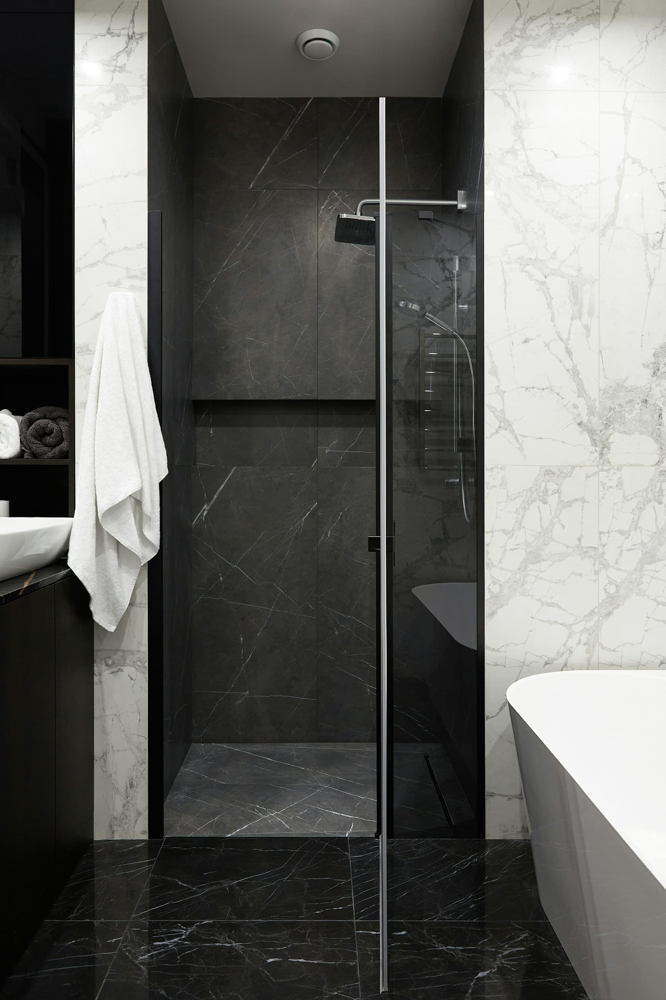
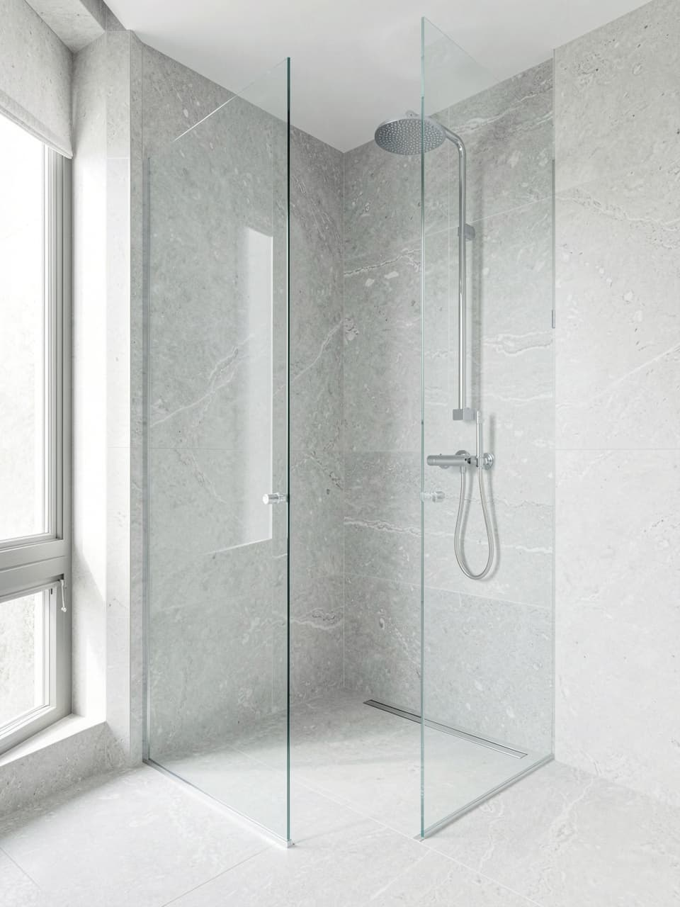
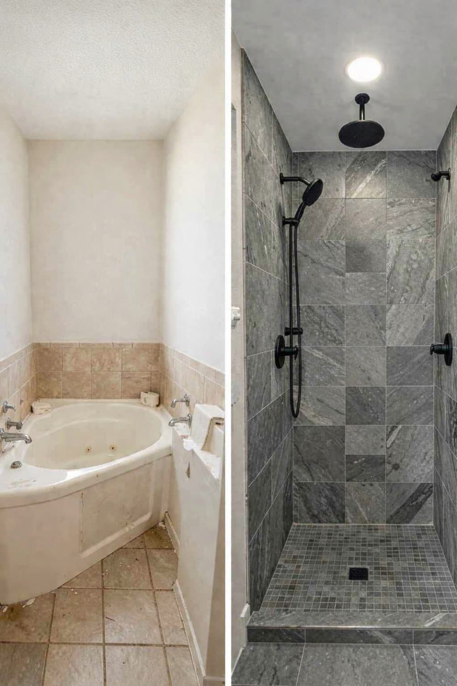

Material continuity
Repeating wall and floor tones can make the shower feel integrated into the room instead of separated from it.
Walk-In Shower Remodeling
Walk-in showers are frequently explored when homeowners want a shower setup that feels easier to enter, less dependent on a tub wall, and more practical for daily routines.

Why homeowners choose this direction
A walk-in shower can free up a bathroom that feels blocked by an underused tub, especially when the room needs easier movement or a clearer shower zone.
This direction also comes up when households want a bathing setup that is easier to enter, quicker to clean, and better aligned with the way the room is used morning and night.
Layout & Space Considerations
Door swing, glass positioning, threshold treatment, and storage placement all affect how usable the shower feels once it is in use.
In narrower bathrooms, a walk-in layout can make turning and entry easier. In larger bathrooms, it can separate showering, vanity use, and towel storage more clearly.
The most successful layouts usually keep circulation direct and avoid forcing the user to pivot around awkward fixture edges.

Maintenance & Daily Use
Wide-format surfaces, fewer trim interruptions, and thoughtfully placed niches can help reduce visual clutter and daily cleaning friction. Glass strategy matters too: more enclosure can contain water better, while less glass can make upkeep simpler.
Style & Function Balance
Repeating wall and floor tones can make the shower feel integrated into the room instead of separated from it.
Recessed niches, ledges, or warm cabinetry nearby can support use without interrupting the visual line of the enclosure.
Brushed fixtures, practical control placement, and simpler trim choices often hold up better in daily use than heavily decorative selections.
Compared with bathtub-oriented options
Walk-in showers often suit households that prioritize entry ease, quicker routines, and a cleaner visual field. Bathtub-oriented options may feel more appropriate when soaking, family bathing needs, or comfort rituals are central to the room.
Neither path is automatically more refined. The stronger choice is the one that better reflects how the room should support daily living over time.

Who this path may suit
More usable floor space in a bathroom that feels tight
Easier entry and less stepping over a tub wall
A shower setup that is simpler to clean and maintain
A bathing area that better fits current and long-term daily use
FAQ
No. Many bathrooms can benefit from a walk-in configuration because it simplifies the visual layout and makes circulation feel more direct.
They can be, especially when the layout reduces hard-to-reach corners and the material selections favor fewer interruptions and easier wipe-down surfaces.
In many cases, yes. Low-threshold entry, integrated seating, and thoughtful placement of support features can make this path relevant to accessibility-focused planning.
Start by clarifying the shower direction, access priorities, and finish goals. The platform can then help connect you with independent local contractors based on that project profile.
Referral Support
If this direction matches the way you want the bathroom to function, the next step is to request project guidance and compare independent local contractors around scope, layout fit, and maintenance priorities.
Check Local Availability